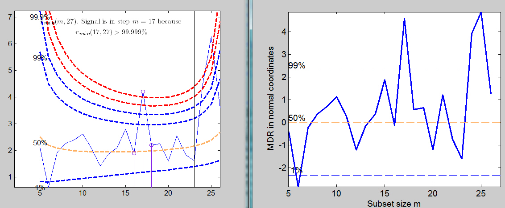

| Flexible Statistics Data Analysis Toolbox™ |
|
Converts values of minimum deletion residual into confidence levels
[MDRinv]
= FSRinvmdr(mdr,p)
[MDRinv] = FSRinvmdr(mdr,p,param1,val1,param2,val2,...)
[MDRinv] = FSRinvmdr(mdr,p) converts values of minimum Mahalanobis distance into confidence levels. mmd is a n-m0 x 2 matrix containing in the first column the forward search index and in the second column the value of min MD monitored along the search. p is the number of variables of the underlying dataset (including the intercept)
[MDRinv] = FSRinvmdr(mdr,p) returns the following information
[MDRinv] = FSRinvmdr(mdr,p,val1,param2,val2,...) specifies one or more of the name/value pairs described in the following table.
| Parameter | Value |
|---|---|
| 'n' |
scalar which specifies the size of the sample. If it is not specified it is set equal to mdr(end,1)+1. |
| 'plots' |
scalar or structure specifying whether it is necessary to
plot in normal coordinates the value of mmd.
|
In this example we compare the monitoring of mdr using original and transformed coordinates for the wool data
load('wool.txt','wool');
y=wool(:,4);
X=wool(:,1:3);
% The line below shows the plot of mdr
[out]=FSR(y,X,'nsamp',0,'plots',1);
% The line below transforms the values of mdr into observed confidence
% levels and shows the output in a plot in normal coordinates using all
% default options
MDRinv=FSRinvmdr(out.mdr,size(X,2)+1,'plots',1);
Comparison of the monitoring of minimum deletion residual in original coordinates (left panel) and normal coordinates (right panel)

|
|
fsrhmdr.html | fsrmdr.html |
|